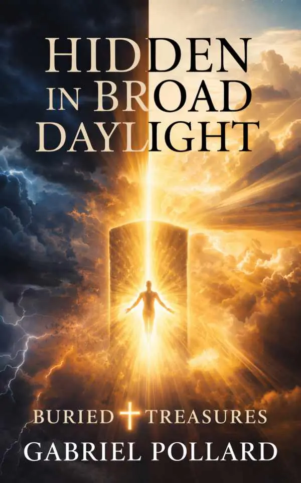

Beyond the headlines
Consider world events through a biblical lens, exploring the spiritual questions beneath environmental, economic, and social change.
A little faith. A different perspective.
A biblical perspective on the world around us, and the hope that holds us steady. Explore Hidden In Broad Daylight with Gabriel Pollard.
In Gabriel’s words“Put God first. Never put down the pen.”
On Gabriel’s bookshelf
A book to sit with, not rush through.GABRIEL POLLARD
Buried Treasures
What if the warnings in Scripture are unfolding around us, while the noise of everyday life keeps us from noticing?
Drawing on biblical prophecy, historical patterns, and the lessons of Noah’s generation, Gabriel invites readers to examine the times with spiritual awareness. This is a book about strengthening faith, recognizing deception, and responding to uncertainty with wisdom and hope.
A place to begin
There’s more than one way into a book. Choose what’s on your mind, and explore a theme from Chapter One.
Consider world events through a biblical lens, exploring the spiritual questions beneath environmental, economic, and social change.
Explore historical cycles, the warnings in Matthew 24, and the danger of becoming comfortable with the familiar.
Make room for biblical clarity amid distraction, strengthening faith and cultivating vigilance with a calm, grounded heart.
Start with a chapter. Take your time with the questions.
Find it in Chapter OneHello, I’m Gabriel.
Gabriel Pollard is a self-published author, a believer in God, and a devoted father of two. He and his life partner are raising their children together, with faith at the heart of their journey.
His passion for writing began more than two decades ago. Through life’s trials, he has returned to the page—and to the belief that a higher power brings grounding, focus, and perspective when the world feels overwhelming.
Gabriel has written four self-published books. In Hidden In Broad Daylight, he brings his attention to biblical prophecy and historical parallels, encouraging readers to navigate changing times with discernment and confidence.
“Put God first. Never put down the pen.”— GABRIEL POLLARDConnect with Gabriel →
From Gabriel, to you
Begin with the complete Chapter One of Hidden In Broad Daylight: Buried Treasures, including introductory reflections, Scripture references, and study questions for personal or small-group reflection.
For walks, journeys & quiet moments
The Hidden In Broad Daylight audiobook is now available on ElevenReader. Gabriel’s bookstore announces a limited-time free listening offer; see the listening page for current availability.
FROM GABRIEL’S DESK
WATCH / BOOK TRAILER
Watch Gabriel’s updated book trailer for an introduction to the book.
Watch on YouTube ↗ON THE HORIZON
Gabriel is working on another book and has shared that it is nearing completion. Follow along for more from his writing journey.
Stay connected →A FEW HELPFUL ANSWERS
The complete, unabridged Chapter One, introductory reflections, Scripture anchor references, and study questions for individual or small-group use.
Yes. No credit card is required. Sign up through Gabriel’s Kit reader form to request the free chapter and follow its delivery instructions.
No. Its focus is biblical discernment, spiritual awareness, and practical faith, without speculative date-setting or fear-based predictions.
Find the complete seven-chapter book through the Amazon and Barnes & Noble links in the bookshelf section. Check each retailer for available formats and current prices.
Yes. The audiobook is available through ElevenReader. Use the audiobook link above to view the current listening offer.
One free chapter. Room for a different perspective.
LET’S KEEP THE CONVERSATION GOING
For reader questions, interviews, media enquiries, or simply to say hello.
Hiddeninbroaddaylight7@gmail.com ↗